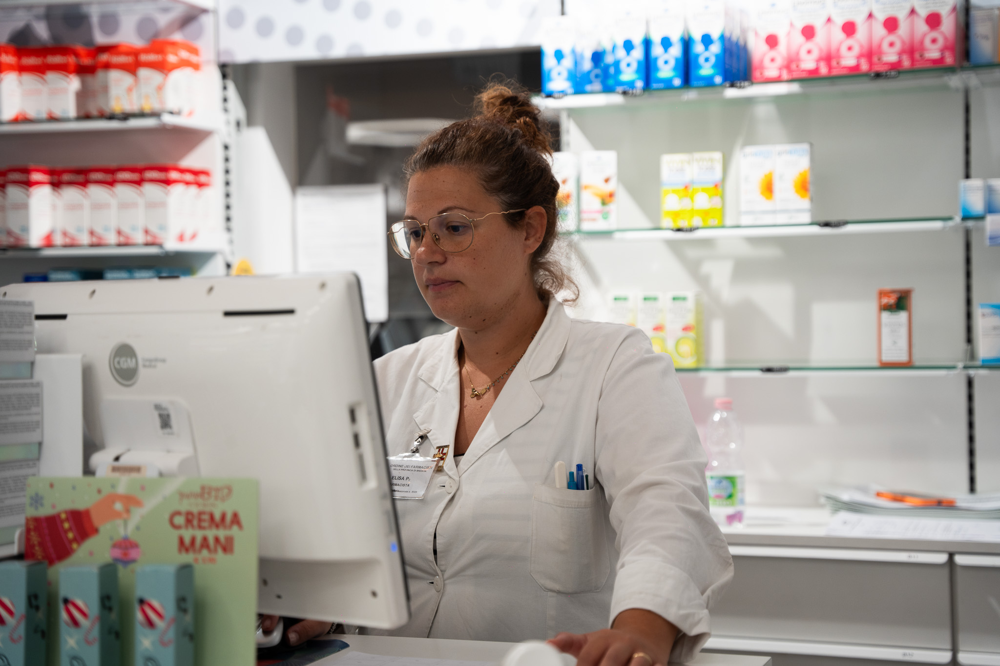

La Farmacia Danesi è attiva da molti anni per offrire alla sua
clientela non solo una gamma completa di medicinali per la persona e
per l'utilizzo veterinario, ma anche un vastissimo assortimento di
prodotti per la cura del benessere e della bellezza di tutta la
famiglia.
La nostra farmacia è soprattutto sinonimo di servizi alla
persona. Presso di noi puoi infatti sottoporti a consulenze
specialistiche, esami di telemedicina (elettrocardiogramma ed holter
pressorio o cardiaco),autoanalisi del sangue (apparecchio validato
dagli Spedali Civili di Brescia e dall'Università per gli studi di
Brescia), preparazioni galeniche e trattamenti estetici nella nostra
nuova cabina estetica.
Il nostro team si avvale di collaboratori
preparati e competenti.
Servizi e consulenze a Timoline di CorteFranca
La Farmacia Danesi offre numerosi servizi, tra cui:
Telemedicina e
autoanalisi: per monitorare la propria salute in modo semplice e
veloce, grazie a servizi come holter cardiaco e pressorio, ECG,
analisi del sangue e delle urine.
Cabina estetica: per prendersi cura
della propria bellezza con trattamenti personalizzati e consulenze
specializzate.
Vaccinazioni: per proteggere la propria salute e quella
dei propri cari, con vaccini contro il Covid-19 e l'influenza.
Tamponi
antigenici rapidi Covid-19: per diagnosticare l'infezione in modo
rapido e affidabile.
Assistenza farmaceutica: per ricevere consigli
personalizzati sui farmaci e sui prodotti più adatti alle proprie
esigenze.
Farmacia veterinaria: per la cura e il benessere degli
animali domestici
Teledermatologia
Hai notato un neo sospetto, una macchia o una lesione cutanea da
tenere sotto controllo?
Ora puoi farlo comodamente nella nostra
farmacia, grazie al nuovo servizio di teledermatologia: un sistema
innovativo che consente di eseguire fotografie cliniche ad alta
definizione della pelle, che verranno inviate in modo sicuro a
dermatologi specializzati per una valutazione professionale.
Un
servizio comodo, veloce e affidabile, realizzato in collaborazione con
professionisti della salute, direttamente in farmacia.
📍 Vieni a
trovarci o chiamaci per maggiori informazioni e per prenotare il tuo
servizio!
📌 Farmacia Danesi
– Al tuo fianco per la salute, ogni
giorno.
Il futuro è quello della personalizzazione della cura. Infatti
spesso il farmacista deve confrontarsi con il medico o con il
veterinario per adattare un determinato farmaco al paziente.
Per
questo la farmacia Danesi di Corte Franca ha investito risorse per
la creazione del nuovo laboratorio per le preparazioni galeniche,
attrezzato con le più moderne tecnologie e gestito da personale
preparato e sempre aggiornato sulle nuove tecniche di preparazione.
Se hai bisogno di una preparazione particolare compila il form e
carica nell'apposita sezione la ricetta medica (obbligatoria);
saremo lieti di comunicarti la fattibilità, i costi ed i tempi di
preparazione del prodotto che ci hai richiesto.
Scopri i nostri prodotti


Salute è sinonimo di benessere.
Per questo motivo abbiamo deciso di dotare la farmacia di uno spazio dedicato all'estetica.
L'idea è quella di coniugare prodotti di altissima qualità con le tecnologie estetiche più all'avanguardia in una cabina moderna e rilassante.
Oltre ai tradizionali trattamenti estetici (praticati sempre con utilizzo di prodotti d'alta qualità) i nostri fiori all'occhiello sono i trattamenti anti-age con radiofrequenza, l'epilazione definitiva con laser diodo e lo sbiancamento dentale cosmetico.
Richiedi una consulenza presso la Farmacia Danesi di Timoline di Corte Franca.
| Lun - Ven | 8:30 - 19:30 |
|---|---|
| Sab | 8:30 - 19:00 |
| Domenica | Chiuso |
Made with love by DV